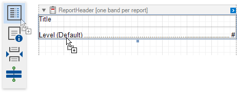
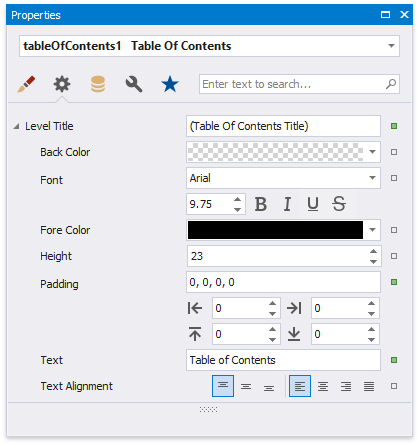
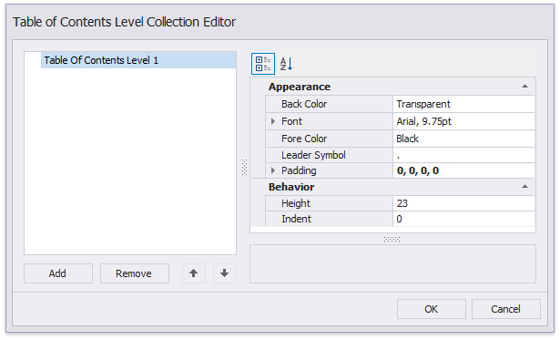

Create a Table of Contents
This tutorial describes the steps to create a report with a table of contents. A table of contents is automatically created based on the bookmarks existing in a report.
Do the following to create a table of contents in a report:
From the Control Toolbox, drop the Table of Contents control onto the Report Header band.

Double-click the title of the table of contents and specify its text.

To customize the title appearance, use the Level Title option's settings available in the Properties window.

To customize the appearance of all other levels, use the Level Default option's settings.

To customize a specific level individually, add a corresponding item to the Levels collection of the table of contents and customize its properties.


The following image demonstrates the result in Print Preview: